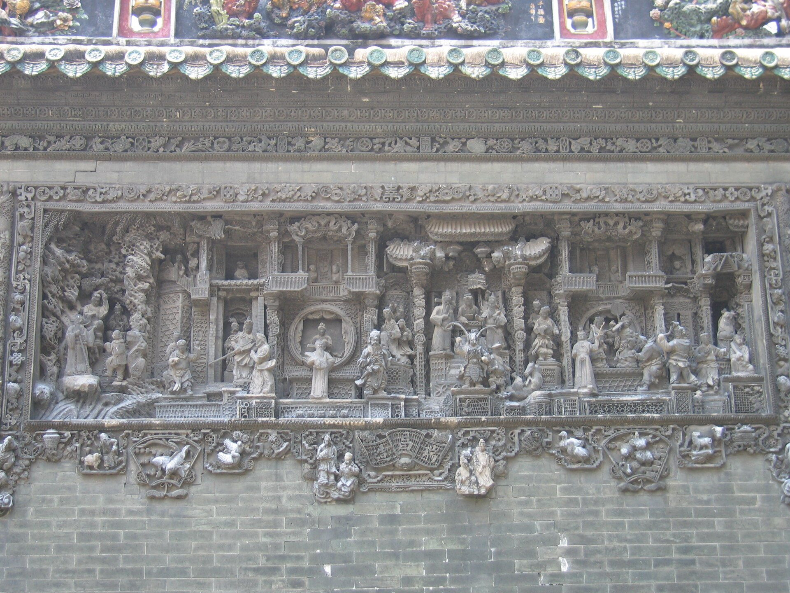

01名与实
祠堂之实，书院之名
清光绪十四年（1888）筹建，十九年（1893）落成。它是一座合族祠堂，却题匾「陈氏书院」。
清代中叶以后，官府屡以「把持讼事、挟众抗官」为由查禁合族祠。为求存续，各姓祠堂纷纷改称「书院」「试馆」「书室」。陈氏书院之名，正由这一段周旋而来。
名为书院，实则兼具祭祀与落脚之用。参与捐资的族人，可将祖先牌位供奉于神龛之中；各地陈氏子弟赴省城备考科举、候任、缴税、诉讼，亦可在此暂居。省城住宿昂贵，这一处落脚地，便是众人集资的理由。
于是，一座祠堂同时装下了两件事：对先祖的追念，与对后辈的托举。

1888筹建
1893落成
72县陈姓捐资
2祠 · 院双重身份
天工人可代，人工天不如。
果然造世界，胜读十年书。
郭沫若 · 1959 年参观后留诗
二十世纪二十年代起，陈家祠的装饰工艺已被德、日建筑专著专题介绍；1959 年辟为广东民间工艺馆，其后更名为广东民间工艺博物馆。